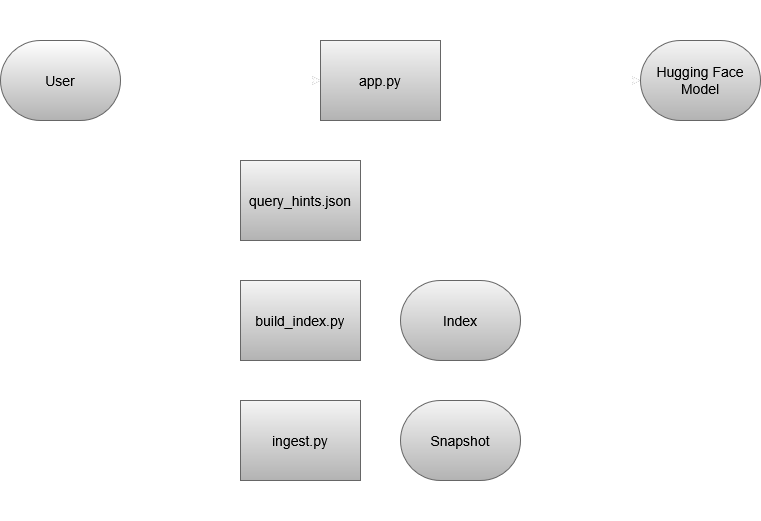

UWSearch Landing
Purpose
UW students and staff regularly struggle to find campus information scattered across dozens of disconnected websites — the events calendar, building maps, and department pages all live in separate places with no unified search. This project builds a natural language search engine that lets users ask plain-English questions and get direct, sourced answers in one place.
The scope is deliberately narrow: UW events and buildings only. This keeps the product polished and completable within 4 weeks. The directory and departmental pages are explicitly out of scope for v1 and documented as a future extension.
Architecture
UWSearch operates on a model view controller (MVC) pattern. The model is an index of ingested data from a snapshot of multiple UW building and event sources. The view is this smooth, card-based page. The controller relies on semantic retrieval from a hugging face model to naturally parse complex queries.

User Guide
UWSearch is easy to use! Just go to https://bld.daggertooth-cirius.ts.net/, write a query, and hit "Search"!